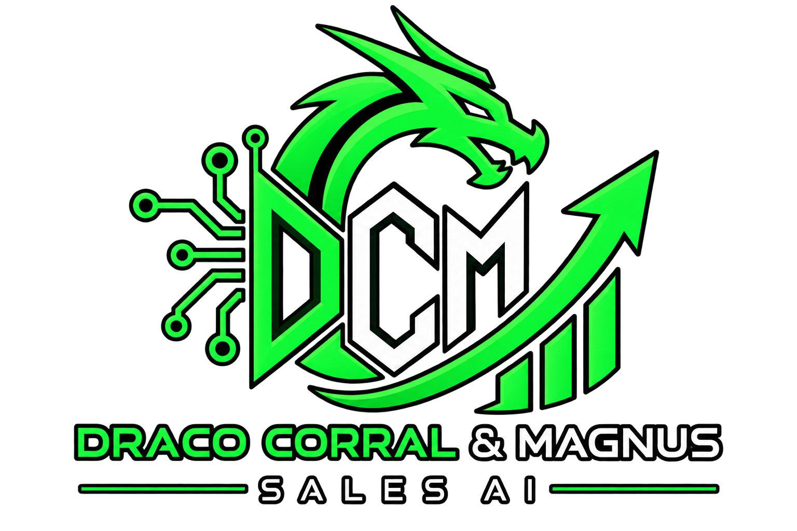

AI
Product Discovery Engine
Product information will be loaded from authorized commerce data sources.
DATA CONNECTION READY
Technology designed to discover, organize and evaluate commercial opportunities from authorized merchants, advertisers and affiliate networks.
Products and commercial opportunities displayed here will originate from authorized advertisers and partner networks.
Product information will be loaded from authorized commerce data sources.
DATA CONNECTION READYIntelligent organization and analysis of available commercial opportunities.
AI ENGINEArchitecture prepared for authorized affiliate and advertiser integrations.
INTEGRATION LAYERDRACO CORRAL & MAGNUS - SALES AI is a commerce intelligence initiative developed through MAGNUSPROTOCOL.WORLD. The platform is designed to organize commercial information, assist product discovery, evaluate opportunities and transform authorized commerce data into structured information for users.
Product Discovery organizes information obtained from legitimate commercial sources. Products may be classified by category, merchant, availability and other attributes supplied by authorized data providers.
The analysis layer is designed to compare structured commercial information and identify potentially relevant opportunities. Automated analysis is used as decision-support technology and does not guarantee prices, availability, savings, sales or financial results.
Commercial information can originate from merchants, advertisers, affiliate networks and other authorized sources. The system is designed to normalize and organize this information before it is presented through the platform.
MAGNUSPROTOCOL.WORLD distinguishes externally supplied commercial information from internal analytical processing. Merchant-provided information remains subject to the conditions, availability and policies of the original source.
Merchant Intelligence is designed to organize advertiser and merchant information into a consistent structure that can support discovery, comparison and navigation across participating commerce sources.
The infrastructure is being developed for legitimate affiliate network integrations. Affiliate links and network data are used only when access and participation are authorized by the respective merchant or affiliate network.
The platform is designed around transparent affiliate disclosures, separation of editorial and commercial information, privacy principles and respect for the rules established by participating networks and advertisers.
Artificial intelligence assists with classification, organization and analysis. Final purchasing decisions remain with the user, and transactions are completed under the terms of the corresponding merchant.
DRACO CORRAL & MAGNUS - SALES AI is a technology initiative presented through MAGNUSPROTOCOL.WORLD, focused on artificial intelligence, commerce intelligence, product discovery and affiliate technology.
For commercial inquiries, technology partnerships, advertiser relationships and affiliate network communications, contact MAGNUSPROTOCOL.WORLD through our official business email.
Official Business Contact
dracocorralmagnussalesai@gmail.com